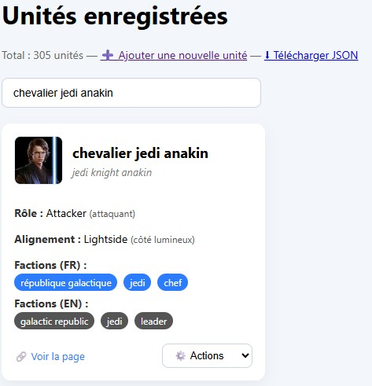
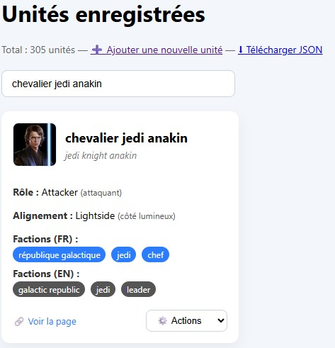
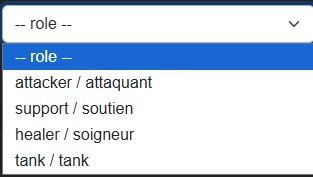
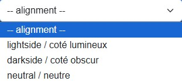

Fonctionnement du filtre des unités
Introduction
Ce projet propose un outil permettant de parcourir, rechercher et filtrer les personnages et vaisseaux du jeu Star Wars: Galaxy of Heroes (SWGOH). L’objectif est de rendre plus simple et rapide l’accès aux informations des unités en affichant uniquement celles qui correspondent aux critères choisis par l’utilisateur.
Ce que fait le code
La page de filtre est constituée de deux grandes parties :
- Une barre latérale qui contient tous les filtres (factions, rôles, alignements, recherche, tags personnalisés, ainsi qu’un bouton pour changer de langue entre anglais et français).
- Une zone de résultats où les personnages et vaisseaux correspondant aux critères sélectionnés sont affichés sous forme de cartes avec leur image, leur rôle, leurs factions et un lien vers leur page détaillée.
En pratique, le code charge une liste complète d’unités depuis un fichier externe (units.json)
puis applique automatiquement les filtres définis par l’utilisateur.
Chaque interaction (sélection d’une faction, choix d’un rôle, recherche par nom, ajout d’un tag…)
entraîne une mise à jour dynamique des résultats.
Lecture des données JSON
Les informations sur chaque unité (personnages et vaisseaux) ne sont pas directement écrites dans la page,
mais sont stockées dans un fichier externe : units.json.
Ce fichier regroupe toutes les données nécessaires pour construire l’affichage : nom, rôle, alignement,
factions, image et lien détaillé.
Exemple d’une unité dans le fichier JSON :
 

Chaque propriété correspond à un élément affiché dans la page :
- id : identifiant unique de l’unité (en anglais, sans espace ni majuscule dans la plupart des cas).
- name : nom de l’unité disponible en anglais (
en) et en français (fr). - role : rôle de l’unité (Attaquant, Tank, Soutien, Soigneur).
- alignment : alignement de l’unité (Côté lumineux, Côté obscur, Neutre).
- factions : tableau regroupant toutes les factions auxquelles appartient l’unité, avec traduction FR/EN.
- page : lien vers une page détaillée dédiée à ce personnage ou vaisseau.
- image : URL de l’image de l’unité affichée dans la carte de résultats.
Ainsi, la page lit ce fichier JSON au chargement et génère automatiquement les filtres et les cartes en fonction
des données disponibles. Cela permet de garder une structure centralisée : il suffit de mettre à jour
units.json
pour que la page affiche immédiatement les nouvelles unités ou traductions.
Gestion des filtres
La force de ce projet est de pouvoir sélectionner rapidement les unités qui nous intéressent grâce à différents filtres. Trois grands types de filtres sont disponibles : les factions, le rôle et l’alignement.
Filtrage par factions
Les cases à cocher affichées dans la barre latérale sont générées automatiquement à partir du fichier JSON.
Cela signifie que si une nouvelle faction est ajoutée au fichier units.json, elle apparaîtra
automatiquement dans les filtres sans modifier le code HTML.
Exemple : si on coche la case Bad Batch, seules les unités appartenant à cette faction s’affichent.
Filtrage par rôle
Le rôle d’une unité correspond à sa fonction principale dans le jeu : Attaquant, Tank, Soutien ou Soigneur. L’utilisateur peut sélectionner un rôle dans un menu déroulant pour afficher uniquement les unités correspondantes.
Exemple : choix du rôle Attacker → seules les unités de type attacker (attaquant en français) apparaissent.
Filtrage par alignement
Chaque unité a également un alignement : Côté lumineux, Côté obscur ou Neutre. Ce critère est sélectionné grâce à un menu déroulant et fonctionne en complément des autres filtres.
Exemple : afficher uniquement les unités du Côté lumineux.
Impact du choix de la langue
Tous ces filtres sont sensibles au choix de la langue (EN / FR).
En effet, chaque donnée du JSON contient une traduction anglaise (en) et française
(fr).
Lorsque l’utilisateur change la langue :
- Les noms des factions s’adaptent automatiquement (ex. Galactic Republic → République Galactique).
- Les rôles et alignements changent également de langue.
- Les filtres appliqués restent actifs, mais affichent les valeurs traduites.
Ce système permet une navigation fluide, que l’on soit joueur francophone ou anglophone.
👉 En résumé : les filtres permettent de combiner plusieurs critères (faction, rôle, alignement). Les résultats se mettent à jour automatiquement à chaque modification et restent cohérents avec la langue choisie.
Affichage en fonction des filtres sélectionnés
Une fois les filtres appliqués (factions, rôle, alignement, langue…), la page ne garde que les unités qui correspondent à tous les critères choisis. Les résultats sont affichés dynamiquement sous forme de cartes, sans avoir besoin de recharger la page.
Structure d’une carte
Chaque unité trouvée est affichée dans une carte qui contient :
- Image de l’unité
- Nom (dans la langue sélectionnée)
- ID unique de l’unité
- Rôle
- Factions (classées par ordre de priorité si nécessaire)
- Alignement
- Bouton “Détails” menant à la page complète du personnage ou du vaisseau
Mise à jour en temps réel
Dès qu’un filtre est modifié (cocher/décocher une faction, changer de rôle, saisir un nom…),
le code relance automatiquement la fonction applyFilters().
Cette fonction parcourt toutes les unités du fichier JSON et ne garde que celles qui correspondent aux filtres
actifs.
Exemples d’utilisation
• Si l’on choisit la faction Bad Batch + rôle Attaquant + alignement Côté lumineux, seules les unités correspondant aux trois critères s’affichent.
• Si aucun filtre n’est sélectionné, la page affiche toutes les unités disponibles.
👉 En résumé : l’affichage s’adapte automatiquement aux filtres actifs. Le joueur visualise uniquement les personnages et vaisseaux qui correspondent à sa recherche, sous une forme claire et visuelle.
Et pour les vaisseaux ?
Le fonctionnement est exactement le même que pour les personnages : les filtres (factions, rôle, alignement, recherche, langue) s’appliquent de façon identique.
La seule différence est que les données ne sont pas stockées dans units.json mais dans un fichier
séparé :
ship.json.
Ainsi, le code charge ce fichier lorsqu’il s’agit d’afficher et filtrer les vaisseaux.
👉 En résumé : même logique de filtrage, seule la source de données change.